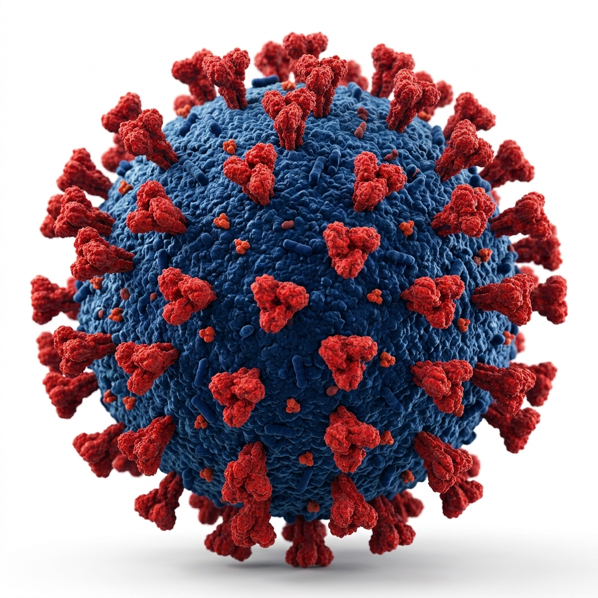

A virus is a pathogen that replicates inside the cells of an organism. They are found in almost every ecosystem on Earth and infect all life forms. Since the discovery of the tobacco mosaic virus in 1898, more than 16,000 of the millions of virus species have been described. When infected, a host cell is often forced to produce thousands of copies of the virus. Outside an infected cell, viruses exist as virions, which consist of genetic material, the capsid that surrounds and protects the genetic material, and sometimes an outside envelope of lipids. Viruses can spread through disease-bearing organisms, airborne transmission, hand-to-mouth contact, ingesting food or water, and other means. Viral infections in animals provoke an immune response that usually eliminates the virus; viruses that evade immune responses result in chronic infections. Immune responses can be produced by vaccines, while antiviral drugs can be used to treat infections. (Full article...)